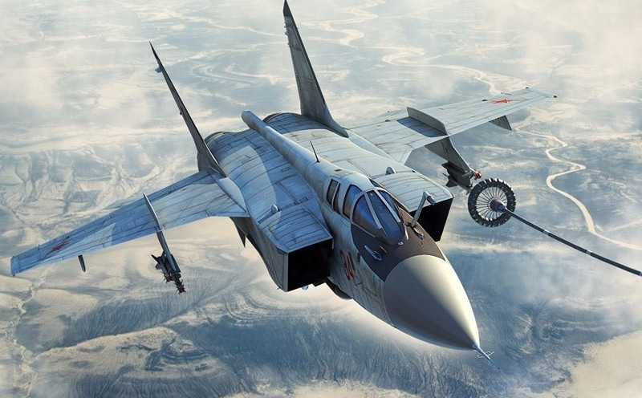
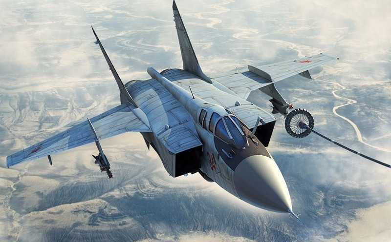

| Технические характеристики; |
| Экипаж, чел. | 2 |
| Двигатели ТРДД Д-30Ф6 | 2 |
| Тяга двигателей, кгс | 2*15500 |
| Потолок практический, м | 20 600 |
| Дальность перегоночная с ПТБ, км | 3 300 |
| Практическая дальность без ПТБ, км | 2 500 |
Максимальная продолжительность полета, ч:
- с подвесными баками
- с дозаправкой в воздухе |
3,6
7,0 |
| Максимальная перегрузка, ед. | больше 5 |
Рубеж перехвата, км:
- на сверхзвуковой скорости
- на дозвуковой скорости без ПТБ
- на дозвуковой скорости с ПТБ |
720
1 000
1 400 |
| Время набора высоты 10 км, мин. | 7,9 |
| Длина самолета, м | 22,688 |
| Высота самолета, м | 6,150 |
| Размах крыла, м | 13,464 |
Бортовая РЛС СБИ-16 «ЗАСЛОН» (с фазированной антенной решеткой):
- Дальность обнаружения цели, км
- Дальность захвата цели, км
- Кол-во одновременно сопровождаемых целей
- Кол-во одновременно атакуемых целей
- ИК станция переднего обзора |
200
160
10
4
|
| Вооружение встроенное |
Пушка шестиствольная ГШ-23-6:
- Калибр, мм
- Скорострельность, выстрелов/мин.
- Боезапас, снарядов |
| Вооружение подвесное |
Количество внешних узлов подвески:
- УР «воздух-воздух» Р-27, Р-30, Р-33, Р-40Т, Р-40Д, Р-60М
- стандартный вариант: Р-33 + Р40ТД |
10
4+2 |
 
